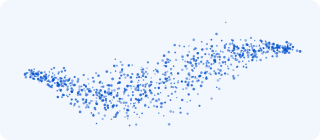
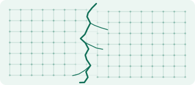

Every other Monday we read one primary source deeply, together. We read in silence first, share one reaction each, then talk it through. Drop-ins are welcome, because the reading happens in the session.
Next session Monday, 2 November 2026 · 15:30 UTC
The Hugging Face incident and the road ahead OpenAI, 2026 · Kickoff
The question for the year: how do organizations, teams, and people coordinate through what they emit, and what changes when agents read and write those signals too?
It starts with what agents are in practice and how nature coordinates without a manager. It then looks at what systems emit, how to see hardness in real incidents, and how to design the hard core. It ends with how industries keep that core alive, set against business process re-engineering.

Recent incidents and specifications show what agents can see and do, and what changes for the people working beside them.
Guest Formal Protocol Theory SIG
Cells coordinate through thresholds, feedback and a small conserved core with wide variety at the edges.
Guest Distributed Robotics Group
What systems publish for others to act on: files, logs, events, confidential reports and required disclosures.
Guest Memory Research Group

Investigations show where hardness held, where it was missing, and where it cracked.
Guest Personhood Research Group
Guardrails built into the architecture, from end-to-end design to staged rollouts, checklists and signed mandates for agents.
Guest Protocol Fiction SIG
How industries keep amending their protocols, read against re-engineering’s clean slate.
Guest Psychohistory SIG
Explore every reading on the map
Every other Monday, 15:30–16:30 UTC, from 2 November 2026, with a break over New Year. 16:30 Berlin, 10:30 New York, 7:30 San Francisco in winter; an hour later locally from late March.
Protocol Institute Discord, #protocols-for-business
Yes. Recordings go in the archive.
Rafael Fernández, @rafa_0x on Discord
Alongside the session, members post the protocols they've been watching in #protocols-for-business.
Your AI assistant knows what you’ve read, worked on and talked through. Copy the prompt into it, and it will suggest readings to add, and readings in the plan to remove, swap or move to another theme. Check what it proposes, and it sends each change to GitHub for the group to review. Each contribution adds one participant’s experience to a shared picture of the field.
I’m part of the Protocols for Business SIG at the Protocol Institute. We’re building a shared map of readings on how businesses coordinate through protocols between people, software and machines. The year’s reading plan has six themes: what agents are in practice; natural coordination; emissions, meaning what systems publish for others to act on; seeing hardness in incidents; designing the hard core; and keeping the core alive, set against business process re-engineering. Every reading on the map is listed here, and the ones in this year’s plan carry their theme: https://npc.here.now/protocolvision/sessions/map/readings.json Use what you know about me: your memory of me, our past conversations, my projects and work, and anything I’ve read, saved or written about. From that context, suggest up to five changes. A change can add a reading the map is missing, remove a reading from the plan, swap a plan reading for a better one, or move a reading to another theme. Prefer primary sources: incident and accident reports, specifications, regulations, original research papers, and first-hand accounts from people who ran systems at scale. Only include sources you’re confident exist, and leave out anything private about me, my employer or other people. For each change, say what kind it is, the reading already on the map (for a removal, swap or move), the new reading’s title, author, year and a working link (for an addition or swap), the theme, one to three sentences on why, and one sentence on why it matters from my own experience. Show me the list and wait for me to confirm or edit it. Then send the confirmed changes to GitHub, one issue per change, in the repository protocolvision/sig-p4b: - If you can create GitHub issues for me, open them directly. Use a title such as “Reading: add …” or “Reading: swap … for …”, add the label reading-suggestion, and put the details above in the body. - If you can’t, give me one link per change that opens a filled-in form, with each value URL-encoded: https://github.com/protocolvision/sig-p4b/issues/new?template=reading-suggestion.yml&title=Reading:%20SUMMARY¤t_reading=READING%20ON%20THE%20MAP&reading_title=NEW%20READING&url=LINK&author=AUTHOR%20AND%20YEAR&adds=WHY&experience=WHY%20IT%20MATTERS%20TO%20ME
Your assistant opens a GitHub issue for each change, or gives you a link to a filled-in form. You’ll need a free GitHub account. You can also use the form yourself, and talk it through in #protocols-for-business on Discord.
Session notes and the running research log are published on our blyg, which you can follow with any RSS reader (feed). Notes from the group's 39 earlier sessions are in the Protocol Institute meeting archive, and a selection from the past year is on the blyg.
Recordings are posted after each session, starting 2 November 2026.